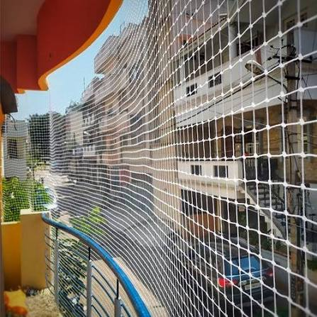
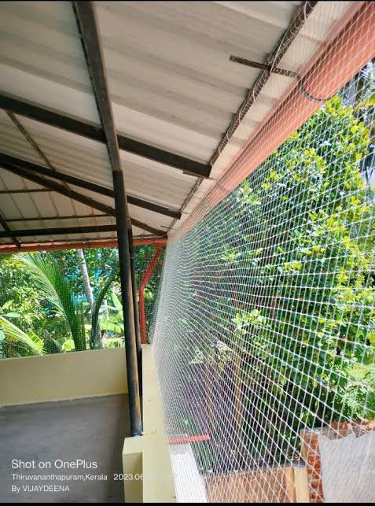
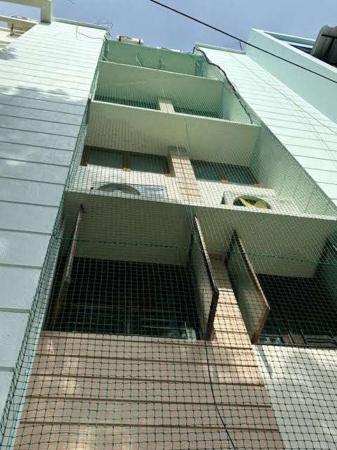
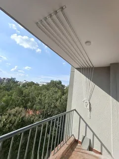
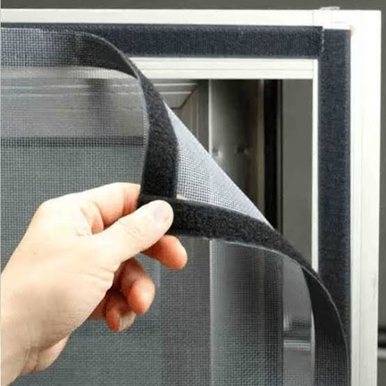
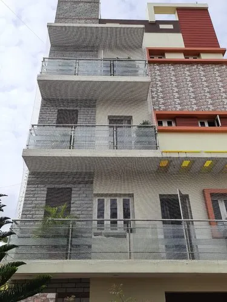

01
HOME PROTECTION
01
HOME PROTECTION
Family Safety
Balcony Safety Nets
Secure your balconies with durable, high-quality safety nets.
Call Now ↗For residential buildings and courtyards in Kammanahalli, suitable exterior netting can help limit unwanted bird and animal access. Varsha Safety Nets provides customized house covering nets in Kammanahalli to help protect independent houses, villas, residential apartments and multi-storey properties from unwanted animal and bird entry. Our complete house protection nets in Kammanahalli are designed according to the architectural layout, exterior openings and specific coverage requirements of each property. From uncovered courtyards to exposed terrace spaces, we offer practical netting arrangements that help maintain residential cleanliness without unnecessarily restricting natural daylight and ventilation. Varsha House Covering Nets Kammanahalli combines suitable materials with professional workmanship to deliver customized residential covering solutions.
At Varsha Safety Nets in Kammanahalli, we recognize that protecting an entire house requires a different approach from covering individual openings. Our services include full house covering nets, independent house protection nets, pigeon protection house covering nets, monkey prevention nets for houses, open courtyard covering nets, terrace enclosure nets and residential building exterior nets in Kammanahalli. We carefully examine exposed sections, building elevations, roof openings and available mounting surfaces before recommending an appropriate netting arrangement. Customers can explore material options such as Garware house covering nets, UV-stabilized HDPE house protection nets and durable nylon house covering nets according to their intended requirements. Our customized house net installation in Kammanahalli focuses on suitable mesh spacing, complete perimeter coverage and a neat exterior appearance.
Homeowners experiencing repeated bird nesting, monkey disturbances or unwanted animal entry can contact Varsha House Covering Nets in Kammanahalli for personalized installation assistance. We provide residential house covering services in Kammanahalli for newly constructed houses, renovated properties, duplex homes and existing independent residential buildings. The house covering net price in Kammanahalli depends on the total surface area, selected mesh material, building height and complexity of the installation. We also assist customers with enquiries for old house covering net replacement in Kammanahalli when existing netting becomes damaged or deteriorated. Whether you are searching for affordable house covering nets in Kammanahalli, full building pigeon protection nets or experienced house covering net installers near me in Kammanahalli, our team helps you identify an appropriate coverage solution for your property. Contact Varsha Safety Nets at 9591222171 to discuss your residential netting requirements and receive a free house covering net quotation in Kammanahalli.
Customized house covering nets in Kammanahalli to help protect terraces, courtyards, exterior openings and exposed residential spaces from unwanted bird and animal entry.
Expert house covering net installation in Kammanahalli with accurate measurements, appropriate mesh materials and carefully planned fastening arrangements.

Customized house covering solutions for cleaner and better-protected residential properties in Kammanahalli.
Property owners in Kammanahalli can consider mesh coverage for courtyards and exposed passages when birds repeatedly enter exposed spaces. Varsha Safety Nets offers specialized house covering net services in Kammanahalli to help homeowners manage these problems through professionally planned mesh installations. Instead of repeatedly cleaning affected surfaces, residents can consider suitable external house covering nets in Kammanahalli that restrict unwanted bird access to vulnerable sections of their property. Our netting arrangements are planned around existing building features, including roof extensions, open passages, exterior walls and residential setbacks. Varsha House Covering Nets Kammanahalli focuses on creating functional coverage systems that complement the appearance of residential buildings while supporting everyday household comfort.
A successful house covering installation begins with understanding how birds or animals gain access to different parts of the property. At Varsha Safety Nets in Kammanahalli, we examine exposed roof openings, exterior wall gaps, accessible ledges and uncovered residential spaces before recommending a suitable enclosure arrangement. Our services include open roof covering nets, house side covering nets, residential setback protection nets, building elevation covering nets, outdoor passage protection netting and anti-bird house enclosure nets in Kammanahalli. For larger properties, we plan the required mesh coverage in sections to accommodate differences in building height and structural design. Our professional house exterior net fitting considers suitable mesh dimensions, fastening strength, material durability and essential access points. We also consider ventilation, emergency exits and routine property maintenance requirements while planning complete house netting in Kammanahalli.
Choosing an appropriate house covering system can help reduce recurring maintenance caused by pigeon droppings, nesting debris and unwanted bird activity. Varsha House Covering Nets in Kammanahalli assists property owners with material comparisons, coverage planning and installation estimates based on their individual requirements. Homeowners looking for house covering net contractors in Kammanahalli can discuss partial or extensive building coverage according to their available budget. The full house net covering cost in Kammanahalli is determined by the required mesh quantity, building dimensions, working height and installation complexity. We also accept enquiries for residential exterior net replacement and improvements to existing house enclosure systems. Whether you require pigeon-resistant house covering nets in Kammanahalli or suitable monkey entry prevention netting, our team helps you identify appropriate material specifications for the intended application. Contact Varsha Safety Nets Kammanahalli at 9591222171 to arrange a site assessment and request a free house covering net installation estimate in Kammanahalli.
Purpose-specific residential house covering nets in Kammanahalli for exposed roof spaces, building elevations and outdoor residential openings.
Carefully planned house exterior net installation in Kammanahalli with suitable mounting arrangements, accurate measurements and attention to finishing details.

Thoughtfully planned exterior netting solutions for cleaner and more comfortable residential spaces in Kammanahalli.
Varsha Safety Nets provides complete safety net installation services in Bengaluru for homes, apartments, offices and commercial spaces. We offer premium-quality materials, expert installation and reliable protection at affordable prices across every corner of Bengaluru.
01
HOME PROTECTION
Secure your balconies with durable, high-quality safety nets.
Call Now ↗ 02
CHILD PROTECTION
02
CHILD PROTECTION
Create a safer environment for children around balconies and windows.
Call Now ↗ 03
BIRD CONTROL
03
BIRD CONTROL
Prevent pigeons from entering balconies and creating unwanted mess.
Call Now ↗
04 BUILDING SAFETYProtect open duct spaces with professionally installed safety nets.
Call Now ↗ 05
PREMIUM SOLUTION
05
PREMIUM SOLUTION
Enjoy open views and enhanced balcony safety with premium invisible grills.
Call Now ↗ 06
BIRD DETERRENT
06
BIRD DETERRENT
Discourage birds from settling on ledges, rooftops and building surfaces.
Call Now ↗ 07
WINDOW SAFETY
07
WINDOW SAFETY
Add an extra layer of protection to open windows and residential spaces.
Call Now ↗ 08
BIRD PROTECTION
08
BIRD PROTECTION
Keep unwanted birds away from balconies, open spaces and buildings.
Call Now ↗ 09
HOME PROTECTION
09
HOME PROTECTION
Durable house covering safety nets to protect your home from birds, monkeys and unwanted intrusions across Bengaluru.
Call Now ↗
10 SMART SPACE SAVINGPremium ceiling cloth hangers for convenient clothes drying and maximum space utilization in balconies and apartments across Bengaluru.
Call Now ↗ 11
SPORTS SOLUTIONS
11
SPORTS SOLUTIONS
Durable netting for cricket practice, football grounds and sports facilities.
Call Now ↗
12 INSECT PROTECTIONKeep mosquitoes and insects outside while allowing fresh air inside.
Call Now ↗Explore our latest Safety Nets and Invisible Grills installations across Bengaluru. Discover the quality and reliable protection offered by Varsha Safety Nets.
Covering large residential openings requires netting materials that are suitable for extended outdoor use and different architectural configurations. Varsha Safety Nets offers carefully selected house covering net materials in Kammanahalli for independent houses, duplex residences, villas and multi-storey residential properties. Unlike smaller netting installations, full house coverage requires consideration of wider mesh spans, building elevations, wind exposure and suitable perimeter support. Our residential exterior covering nets in Kammanahalli are selected according to their material specifications, intended application and property dimensions. Varsha House Covering Nets Kammanahalli helps homeowners identify practical material solutions for enclosing exposed residential sections while maintaining necessary daylight and air circulation.
At Varsha Safety Nets in Kammanahalli, customers can explore Garware house covering nets, weather-resistant HDPE house enclosure nets and premium nylon house protection nets for different exterior coverage requirements. Garware netting is available in various material specifications and mesh configurations. Suitable UV-stabilized HDPE house covering nets in Kammanahalli are useful for residential roof openings and exterior spaces exposed to sunlight and seasonal weather conditions. Nylon netting offers flexible coverage possibilities for irregular building designs and customized enclosure arrangements. Our team considers mesh thickness, strand strength, expected environmental exposure and installation requirements before recommending durable full house covering materials in Kammanahalli.
Selecting the correct mesh opening is particularly important when planning pigeon prevention house covering nets in Kammanahalli. Suitable bird exclusion mesh helps restrict entry through exposed roof sections, residential ledges and uncovered exterior passages. Varsha House Covering Nets also offers transparent house covering net options in Kammanahalli for homeowners who prefer less noticeable exterior coverage. These materials can be considered for areas where preserving the appearance of the building is important. For properties affected by monkey disturbances, monkey-resistant house covering materials require suitable strength specifications and specialized fastening arrangements. Ordinary bird netting should not be assumed to withstand monkey activity. Our material selection process helps customers choose appropriate residential enclosure nets in Kammanahalli based on the actual protection requirements of their homes.
Large-area house enclosure projects also depend on suitable supporting components and perimeter attachments. Varsha Safety Nets Kammanahalli uses appropriate house covering net fixing accessories, including supporting ropes, mounting hooks, anchoring screws and compatible exterior fastening components. Our full house net installation materials are selected by considering the existing building structure, surface conditions, coverage dimensions and necessary maintenance access. Homeowners comparing the Garware house covering net price in Kammanahalli or searching for house covering net material suppliers in Kammanahalli can contact our team for customized recommendations. We provide assistance with material comparisons, property measurements and installation estimates. Contact Varsha Safety Nets at 9591222171 to request a free house covering net material quotation in Kammanahalli for your residential property.
Quality Garware residential covering nets available in different mesh specifications for independent houses, building exteriors, open roof spaces and customized residential enclosure projects in Kammanahalli.
UV-stabilized HDPE house covering nets in Kammanahalli suitable for outdoor residential applications requiring resistance to regular sunlight, moisture and changing environmental conditions.
Visually discreet transparent house covering nets in Kammanahalli for suitable exterior openings where natural lighting, ventilation and residential appearance are important considerations.
Flexible nylon house covering nets in Kammanahalli for customized residential enclosures, irregular exterior openings, open courtyards and large-area building coverage according to suitable material specifications.
Suitable supporting ropes, anchoring hooks, mounting screws and exterior net fastening components for stable perimeter coverage and professional house covering net installation in Kammanahalli.
Looking for an effective way to protect your residential property from unwanted bird and animal entry? Varsha Safety Nets Kammanahalli answers common questions about house covering nets in Kammanahalli, exterior mesh materials, complete building coverage, installation expenses and maintenance requirements. Discover suitable residential house covering solutions in Kammanahalli for your property.
House covering nets provide a practical solution for enclosing exposed sections of residential buildings that are frequently accessed by unwanted birds or animals. Varsha Safety Nets installs customized full house covering nets in Kammanahalli to help reduce pigeon nesting, bird droppings and unwanted movement around residential openings. These netting arrangements can cover open courtyards, roof spaces, exterior passages and building elevations while allowing natural daylight and air circulation. Our residential house enclosure nets in Kammanahalli are planned according to the dimensions and architectural design of each property. Homeowners can choose partial or extensive coverage depending on their specific requirements and budget.
Appropriately selected pigeon protection house covering nets can help restrict birds from entering enclosed residential spaces through exposed openings. Varsha House Covering Nets Kammanahalli provides customized coverage options for properties experiencing recurring bird disturbances and unwanted animal movement. However, monkey protection nets for houses in Kammanahalli require stronger material specifications and suitable structural fastening arrangements compared with ordinary pigeon netting. Our team considers the type of animal, possible entry points and required coverage before recommending an appropriate solution. Customers looking for anti-pigeon house covering nets in Kammanahalli or specialized monkey exclusion arrangements can contact us for material recommendations and installation assistance. Existing birds and active nests should be addressed appropriately before enclosing residential openings.
Material selection for complete house net covering in Kammanahalli depends on the property's exterior dimensions, environmental exposure and intended protection requirements. Varsha Safety Nets offers material options including Garware house covering nets, UV-stabilized HDPE residential nets, premium nylon house enclosure nets and transparent house covering nets. Outdoor-grade HDPE netting can be suitable for roof openings and exposed residential spaces that receive regular sunlight and rain. Nylon materials offer flexible coverage options for irregular building structures. Our team considers mesh spacing, strand strength, wind exposure and suitable anchoring requirements before recommending house covering net materials in Kammanahalli. Customers can discuss material specifications and available warranty options before confirming their installation.
The house covering net price in Kammanahalli depends on the total area requiring enclosure, building height, selected mesh material and installation accessibility. Covering a single open roof section may involve different expenses compared to installing protective netting around an entire residential building. Varsha House Covering Nets in Kammanahalli provides personalized quotations according to the actual coverage requirements of independent houses, villas and multi-storey residential properties. Homeowners comparing the house covering net cost per square foot in Kammanahalli can share property photographs and approximate measurements with our team. We also help customers explore affordable house covering nets in Kammanahalli based on their preferred material and budget. Call 9591222171 to receive a free house covering net installation quotation in Kammanahalli.
Periodic inspection helps maintain the condition of residential house covering nets in Kammanahalli, particularly when installations cover large exterior surfaces exposed to changing weather conditions. Property owners should arrange checks for torn mesh, loose perimeter ropes, damaged fastening components and uncovered gaps. Varsha Safety Nets Kammanahalli assists customers with enquiries regarding house covering net maintenance, old exterior net replacement and additional coverage for exposed residential openings. Replacement requirements depend on the material condition, outdoor exposure and manufacturer recommendations. Our house covering net installation services in Kammanahalli also consider necessary maintenance access and emergency exits when planning residential enclosures. If you are searching for house covering net installers near me in Kammanahalli, contact Varsha Safety Nets at 9591222171 for professional installation assistance and replacement quotations.

Years of Professional Residential Netting Expertise
Varsha Safety Nets is dedicated to providing quality Safety Nets and Invisible Grills Installation Services in Bengaluru. We proudly serve homes, apartments, residential communities and commercial properties across every corner of Bengaluru with reliable protection and professional workmanship.
Get professional Safety Nets and Invisible Grills Installation in Bengaluru from Varsha Safety Nets. Quality materials, affordable prices and reliable service across every corner of Bengaluru.
Looking for affordable Safety Nets in Bengaluru? Share your requirements with Varsha Safety Nets and connect directly with our team on WhatsApp for professional installation and quotation.